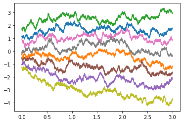
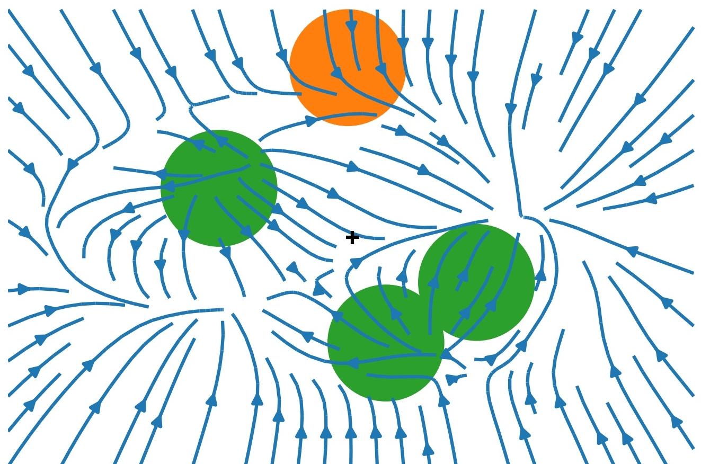
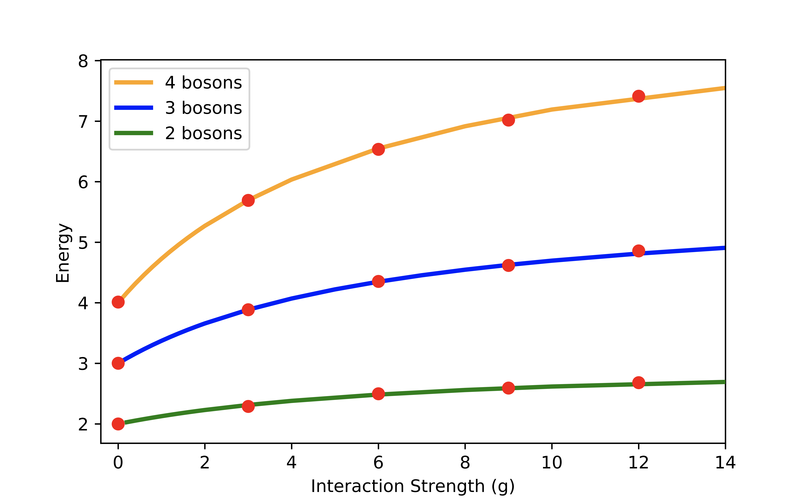
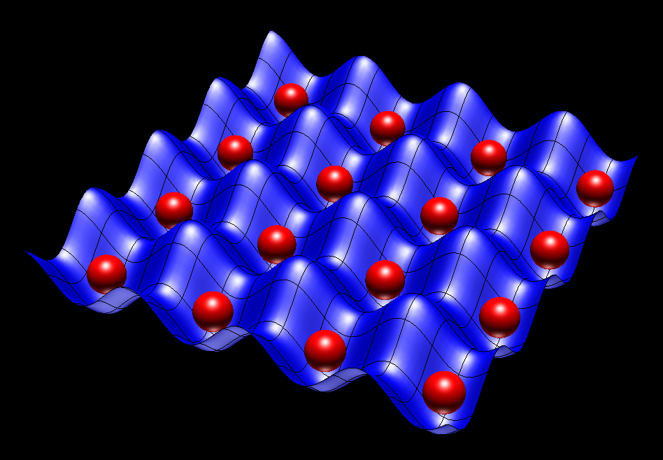

Quantum Ground States from Reinforcement Learning
University of Cambridge
July 22, 2020
\[ \nonumber \newcommand{\br}{\mathbf{r}} \newcommand{\bR}{\mathbf{R}} \newcommand{\bp}{\mathbf{p}} \newcommand{\bk}{\mathbf{k}} \newcommand{\bq}{\mathbf{q}} \newcommand{\bv}{\mathbf{v}} \newcommand{\bx}{\mathbf{x}} \newcommand{\bz}{\mathbf{z}} \DeclareMathOperator*{\E}{\mathbb{E}} \]
Schrödinger Equation: N Particles
- Basic object is wavefunction: \(\Psi(\br_1,\ldots \br_N)\)
$$ \overbrace{\left[\sum_i\left(-\frac{\nabla_i^2}{2m_i}+V(\br_i)\right)+\sum_{i<j}U(\br_i-\br_j)\right]}^{\equiv H \text{, Hamiltonian}}\Psi(\br_1,\ldots \br_N) = E\Psi(\br_1,\ldots \br_N) $$
- Requires grid in \(3N\) dimensions of \(L^{3N}\) points!
- Atoms / molecules are hard; matter (\(N\sim N_\text{A}\)) is impossible!
Variational Principle
- For approximate \(\Psi\) can upper bound ground state \(E_0\)
$$ \begin{align} E_0 &\leq \inf_{\lVert\Psi\rVert=1} \langle \Psi\lvert H\rvert\Psi\rangle\\ \langle \Psi\lvert H\rvert\Psi\rangle &= \int d\br_1\cdots d\br_N \Psi^*(\br_1,\ldots,\br_N)\left[H \Psi\right](\br_1,\ldots,\br_N) \end{align} $$
Challenges
- Form of \(\Psi\)
- Expectation evaluation
- Optimization
Form of \(\Psi\) (‘Feature Engineering’)
Wavefunctions of restricted form
- Factorized, leading to Hartree–Fock method
\[ \Psi(\br_1,\ldots,\br_N)=\psi_1(\br_1)\ldots \psi_N(\br_N). \]
- Jastrow factors include pair correlations
$$ \Psi(\br_1,\ldots,\br_N)\to \Psi(\br_1,\ldots,\br_N)\exp\left(\sum_{i<j}\phi(\br_i-\br_j)\right) $$
- Many more…
Expectation evaluation
\(|\Psi(\br_1,\ldots,\br_N)|^2\) a probability distribution, so evaluate
$$ \frac{\langle \Psi\lvert H\rvert\Psi\rangle}{\langle\Psi \vert\Psi\rangle} =\int d\bR\,|\Psi(\bR)|^2\frac{\left[H \Psi\right](\bR)}{\Psi(\bR)} $$
by Monte Carlo sampling. This is Variational Monte Carlo (VMC)
Neural Approaches
\(\Psi(\bR)\sim \textsf{NN}(\bR)\) and optimize!
Carleo and Troyer (2017): lattice models (more later)
…
Many electrons: Han et al., Pfau et al., Herman et al. (all 2019)
TL;DR
\(\exists\) other formulations of QM including Feynman’s path integral
Let’s learn the path integral instead!
Outline
- Theory
- The path integral
- Loss
- Training
- Architectures
- Experiments
- Future directions
Path integral
- For “Imaginary time” Schrödinger \[ \left[-\frac{\nabla^2}{2m}+V(\br_i)\right]\psi(\br,t) = -\partial_t\psi(\br,t) \]
- Feynman–Kac formula expresses \(\psi(\br,t)\) as expectation…
$$ \psi(\br_2,t_2) = \E_{\br_t}\left[\exp\left(-\int_{t_1}^{t_2}V(\br_t)dt\right)\psi(\br_{t_1},t_1)\right] $$…over Brownian paths with \(\br_{t_{2}}=\br_{2}\)
- For \(t\to\infty\): \(\psi(\br,t)\to e^{-E_0 t}\varphi_0(\br)\)
- Path integral Monte Carlo

Loss function
FK formula defines path measure \(\mathbb{P}_\text{FK}\)
Jamison (1974): process is Markovian \[ d\br_t = d\mathbf{B}_t + \bv(\br_t,t)dt \]
Model drift \(\bv(\br,t)\) defines measure \(\mathbb{P}_\bv\)
\(D_\text{KL}(\mathbb{P}_\bv\lvert\rvert \mathbb{P}_\text{FK})=\E_{\mathbb{P}_\bv}\left[\log\left(\frac{d\mathbb{P}_\bv}{d\mathbb{P}_\text{FK}}\right)\right]\) is our loss function
RL / Optimal Control formulation of QM (Holland, 1977)
Training
- Relative likelihood (Radon–Nikodym derivative; Girsanov theorem)
$$ \log\left(\frac{d\mathbb{P}_{\bv}}{d\mathbb{P}_\text{FK}}\right) =\ell_T - E_0 T+\log\left(\frac{\varphi_0(\br_0)}{\varphi_0(\br_T)}\right) $$ \[
\ell_T\equiv \int_0^T \bv(\br_t)
\cdot d\mathbf{B}_t+\int_0^T dt\left(\frac{1}{2}|\bv(\br_t)|^2+V(\br_t)\right)
\]
Monte Carlo estimate of \(D_\text{KL}(\mathbb{P}_\bv\lvert\rvert \mathbb{P}_\text{FK})=\E_{\mathbb{P}_\bv}\left[\log\left(\frac{d\mathbb{P}_\bv}{d\mathbb{P}_\text{FK}}\right)\right]\)
\(\br^{(b)}_{t}\) from SDE discretization. Analogous to reparameterization trick
\(D_\text{KL}(\mathbb{P}_\bv\lvert\rvert \mathbb{P}_\text{FK})\geq 0\) so \(\E_{\mathbb{P}_\bv}\left[\ell_T\right]\geq E_0T\)
Suggests strategy:
- Represent
$\bv_\theta(\br) = \textsf{NN}_\theta(\br)$ - Integrate batch of SDE trajectories
- Backprop through the (MC estimated) cost
- Represent

Architectures
- For identical particles require permutation equivariance
$$ \bv_{i,\theta}(\br_1,\ldots,\br_N) = \bv_{P(i),\theta}(\br_{P(1)},\ldots,\br_{P(N)}) $$
…for any permutation \(P\)
- Numerous recent proposals e.g. DeepSets (Zaheer et al., 2017)
PairDrift
- Single particle and pair features
$$ \mathbf{h}_i = \boldsymbol{\sigma}_1(\mathbf{r}_i) + \sum_j \boldsymbol{\pi}_1(\mathbf{r}_i-\mathbf{r}_j)\qquad \mathbf{h}_{ij} = \boldsymbol{\Pi}_1(\mathbf{r}_i-\mathbf{r}_j). $$\(\boldsymbol{\sigma}, \boldsymbol{\pi}:\mathbb{R}^d\to \mathbb{R}^H\) and \(\boldsymbol{\Pi}:\mathbb{R}^d\to \mathbb{R}^{H\times H}\) NNs$$ \tilde{\mathbf{h}}_i = \boldsymbol{\sigma}_2(\mathbf{h}_i) + \sum_j \boldsymbol{\pi}_2(\mathbf{h}_{ij})\qquad \tilde{\mathbf{h}}_{ij} = \boldsymbol{\Pi}_2(\mathbf{h}_{ij}). $$ - Drift function is then
$$ \bv_i = \boldsymbol{\sigma}_3(\tilde{\mathbf{h}}_i) + \sum_j \boldsymbol{\pi}_3(\tilde{\mathbf{h}}_{ij}). $$
Experiments
- Hydrogen and Helium atoms
- Hydrogen molecule
- 2D Bosons in harmonic potential with Gaussian interactions
- Single hidden layer (width 64 or 256)
- HardTanh activation
- No additional use made of symmetries
PyTorch code at https://github.com/AustenLamacraft/QuaRL
Helium: 2 electrons
\[ H = -\frac{\nabla_1^2+\nabla_2^2}{2} - \frac{2}{|\br_1|} - \frac{2}{|\br_2|} + \frac{1}{|\br_1-\br_2|} \]
Ground state spins antisymmetric; spatial wavefunction symmetric
\(\varphi_0(\br_1,\br_2)\) not known exactly but \(E_0=-2.903386\)
Kato’s cusp condition implemented with skip connections
Hydrogen Molecule
$$ H = -\frac{\nabla_1^2+\nabla_2^2}{2}+ \frac{1}{|\br_1-\br_2|}- \sum_{i=1,2}\left[\frac{1}{|\br_i-\hat{\mathbf{z}} R/2|} + \frac{1}{|\br_i+\hat{\mathbf{z}}R/2|}\right] $$
- Equilibrium proton separation \(R=1.401\), \(E_0= -1.174476\)

Atomic / Molecular results
| Method | H atom | He atom | H2 molecule | H2 molecule (R=2.8) |
|---|---|---|---|---|
| Numerically exact | -0.5 | -2.903 | -1.173 | -1.071 |
| Hartree–Fock | N/A | -2.862(1.4%) | -1.129(3.8%) | |
| Ours | -0.497(0.6%) | -2.898(0.2%) | -1.169(0.3%) | -1.068(0.3%) |
2D Gaussian Bosons
$$ \begin{align} H&=\frac{1}{2}\sum_i \left[-\nabla_i^2 +\br_i^2\right]+\sum_{i<j}U(\br_i-\br_j)\\ U(\br) &=\frac{g}{\pi s^2}e^{-\br^2/s^2} \end{align} $$
- Mujal et al., PRA 2017 model for ultracold atoms

- Drift Visualization (\(g=15\),
$s=1/2$)

- Differences <1% even with strong interaction

Outlook
Excited states; angular momentum ↔︎ non-reversible drift
Fermions? Dealing with the sign problem
Lattice models
Next Up: Lattice Models


XY model
- On chain / square / cubic lattice
$$ \begin{align} \partial_t \Psi_{\Huge\circ\Huge\bullet\Huge\circ} &= \Psi_{\Huge\bullet\Huge\circ\Huge\circ}+\Psi_{\Huge\circ\Huge\circ\Huge\bullet}\\ &=\overbrace{ \Psi_{\Huge\bullet\Huge\circ\Huge\circ}+\Psi_{\Huge\circ\Huge\circ\Huge\bullet}-2\Psi_{\Huge\circ\Huge\bullet\Huge\circ}}^{\text{master / forward eq.}} +2 \Psi_{\Huge\circ\Huge\bullet\Huge\circ} \end{align} $$
- c.f. imaginary time Schrödinger
\[ \frac{\partial\psi(\br,t)}{\partial t} = \left[\frac{\nabla^2}{2}-V(\br_i)\right]\psi(\br,t) \]
- \(\exists\) Feynamn–Kac representation!